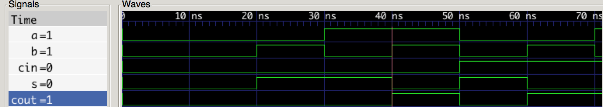

Introduction
Something I’ve been getting asked about a lot lately is hardware simulation in python. I had a recent article on the iOS backdoor and in it I did a bogus iOS device simulation just to illustrate a point.
The simulation was not really accurate in modeling hardware and I stated this. It was just about conveying what could potentially be done should an iOS backdoor exist. Naturally, I received questions/complaints about this. One of the questions was how would you simulate hardware in python?
The answer is MyHDL. As a lover of the python programming language, I felt compelled to demonstrate its ability to simulate hardware using the MyHDL library. What I’ve put together below is a simple simulation for a 1-bit full-adder.
1-bit Full Adder Schematic
Below is a schematic of a 1-bit full adder from this wikipedia article: https://en.wikipedia.org/wiki/Adder_(electronics)

1-bit Full Adder Truth Table
Below is the truth table for the schematic.
| Carry-in | A | B | Sum | Carry-out |
|---|---|---|---|---|
| 0 | 0 | 0 | 0 | 0 |
| 0 | 0 | 1 | 1 | 0 |
| 0 | 1 | 0 | 1 | 0 |
| 0 | 1 | 1 | 0 | 1 |
| 1 | 0 | 0 | 1 | 0 |
| 1 | 0 | 1 | 0 | 1 |
| 1 | 1 | 0 | 0 | 1 |
| 1 | 1 | 1 | 1 | 1 |
1-bit Full Adder Implementation
"""
1-bit full adder simulation with MyHDL
Programmed by William Harrington
Website: wrh2.github.io
"""
from random import randrange
from myhdl import *
def adder(cin, a, b, s, cout):
""" 1-bit full adder """
"""
for declaring combinatorial logic
returns a generator that is sensitive
to all inputs, and that executes
the function whenever an input changes
"""
@always_comb
def full_adder():
# the sum bit logic
s.next = a ^ b ^ cin
# the carry-out bit logic
cout.next = (a & b) | (cin & (a ^ b))
# important note: this is a recursive call
return full_adder
Instantiation
# creating initial signals
cin, a, b, s, cout = [Signal(intbv(0)) for i in range(5)]
# instantiating 1-bit full adder
add_1 = adder(cin, a, b, s, cout)
Test bench
def test():
# format for results
print "| t(ns) | cin | a | b | s | cout|"
print "| ----- | --- | - | - | - | --- |"
for i in range(2):
for j in range(2):
for k in range(2):
# change the signals
# iterate through 0 to 7 in binary
cin.next, a.next, b.next = i, j, k
# prop delay
yield delay(10)
# results
print "| %s | %s | %s | %s | %s | %s |" % (now(), cin, a, b, s, cout)
Running the test bench
test_1 = test()
sim = Simulation(add_1, test_1).run()
Output
| t(ns) | cin | a | b | s | cout|
| ----- | --- | - | - | - | --- |
| 10 | 0 | 0 | 0 | 0 | 0 |
| 20 | 0 | 0 | 1 | 1 | 0 |
| 30 | 0 | 1 | 0 | 1 | 0 |
| 40 | 0 | 1 | 1 | 0 | 1 |
| 50 | 1 | 0 | 0 | 1 | 0 |
| 60 | 1 | 0 | 1 | 0 | 1 |
| 70 | 1 | 1 | 0 | 0 | 1 |
| 80 | 1 | 1 | 1 | 1 | 1 |
<class 'myhdl.StopSimulation'>: No more events
Addendum
Mar 14, 2016
MyHDL offers a plethora of powerful features that I neglected to mention. In this section, I am going to cover how to modify the testbench above so that we can view waveforms and how to convert the code to Verilog (another Hardware Description Language)! Two of my favorite features from MyHDL. Viewing waveforms is much better for me sometimes when trying to understand whats going on with my simulation, and I hate coding in Verilog so needless to say I use these a lot.
New testbench
def fulladd_testbench():
cin, a, b, s, cout = [Signal(intbv(0)[1:]) for i in range(5)]
adder_inst = adder(cin, a, b, s, cout)
prop_delay = 10
@instance
def stimulus():
for i in range(2):
for j in range(2):
for k in range(2):
yield delay(prop_delay)
cin.next, a.next, b.next = i, j, k
return instances()
There is really not much new here except that I’ve created some semblance of a hierarchy by instantiating the adder in the function for the testbench, and I am using a decorator for the stimulus function. The stimulus function is a “generator” that generates inputs for the adder. The adder is sensitive to the change of its inputs and a new result comes out when they change.
Generating the waveforms
def simulate():
tb = traceSignals(fulladd_testbench)
sim = Simulation(tb)
sim.run()
simulate()
<class 'myhdl.StopSimulation'>: No more events
MyHDL has this handy function called traceSignals that does some programming magic to generate a “Value Change Dump” file. This file has a .vcd extension and can be viewed with a waveform viewer like gtkwave. Notice that the output printed only tells me the simulation has ended. I could have placed an output monitor in my testbench to get the same table as I did before however we are going to look at the waveforms below so this isn’t necessary this time, but for you when you are using this tool it might be good to have for debugging purposes.

Getting Verilog code from your MyHDL code
MyHDL has another handy function called toVerilog that we will employ to accomplish this task.
cin, a, b, s, cout = [Signal(intbv(0)[1:]) for i in range(5)]
toVerilog(adder, cin, a, b, s, cout)
<myhdl._always_comb._AlwaysComb at 0x104b51450>
And now behold the magic of MyHDL below!
// File: adder.v
// Generated by MyHDL 0.9.0
// Date: Mon Mar 14 19:53:13 2016
`timescale 1ns/10ps
module adder (
cin,
a,
b,
s,
cout
);
// 1-bit full adder
input [0:0] cin;
input [0:0] a;
input [0:0] b;
output [0:0] s;
wire [0:0] s;
assign s = ((a ^ b) ^ cin);
assign cout = ((a & b) | (cin & (a ^ b)));
endmodule
It even makes the testbench for you!
module tb_adder;
reg [0:0] cin;
reg [0:0] a;
reg [0:0] b;
wire [0:0] s;
wire [0:0] cout;
initial begin
$from_myhdl(
cin,
a,
b
);
$to_myhdl(
s,
cout
);
end
adder dut(
cin,
a,
b,
s,
cout
);
endmodule